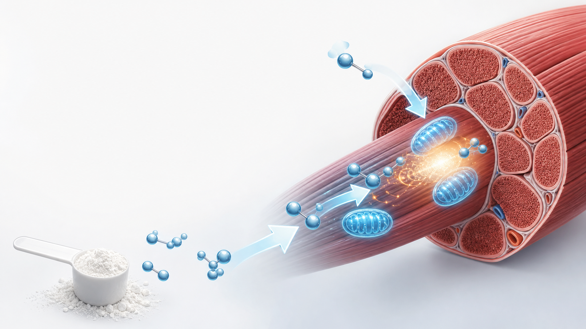

핵심 숫자만 먼저 보기
기본 유지량
3~5g
하루 1회, 매일
로딩 선택 시
20g
5g씩 4회, 5~7일
효과가 큰 운동
≤30초
반복 고강도 운동
초기 체중 증가
수분
근육 내 저장 증가
기대할 수 있는 효과와 한계

섭취
저장
에너지
효과가 큰 경우
- 반복 스프린트·웨이트·점프처럼 짧고 강한 운동에서 수행능력 보조 효과가 가장 뚜렷합니다.
- 저항운동과 병행할 때 근력 및 제지방량 증가가 더 잘 관찰됩니다.
- 채식 위주 식사처럼 식이 크레아틴이 낮은 사람은 저장량 증가 폭이 클 수 있습니다.
- 운동 없이 복용하면 근육 증가보다 수분 증가가 먼저 보일 수 있고, 인지 기능 목적 복용은 아직 연구 단계입니다.
복용법: 단순하게 가는 것이 가장 안전합니다
방법
용량
언제 쓰나
메모
유지량부터 시작
3~5g/일
대부분의 일반 성인에게 권장
1순위
로딩 후 유지
20g/일 → 3~5g
빠른 포화가 필요할 때만 선택
속불편↑
타이밍
식후·운동 후
탄수화물 포함 식사와 함께 가능
꾸준함
제품 형태
Monohydrate
HCl·Kre-Alkalyn보다 근거가 많음
표준
TAKE HOME
크레아틴은 “매일 3~5g + 저항운동 + 충분한 단백질/수면” 조합에서 가장 현실적인 이득을 냅니다. 고용량 로딩은 필수가 아니며, 설사·복부팽만이 있으면 2~3g씩 나눠 먹거나 유지량부터 시작하세요.